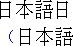
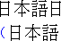
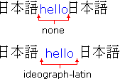
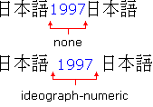
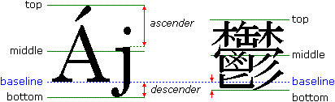
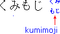
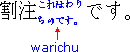
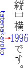
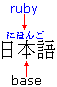
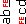

Web pages created in East Asian and right-to-left language versions of Microsoft Office use language-specific cascading style sheet (CSS) styles to format text. Settings and editing options are also stored in the document using language-specific XML elements. The following sections describe the styles and elements used in international documents.
A Kinsoku character set allows custom and built-in sets of characters to be defined as non-breaking when laying out lines of text in Microsoft Word. The character set can be specified for a document and different documents can use different character sets.
Different Kinsoku character sets can be specified for different languages. For each language, there are two groups of Kinsoku characters. The "leading" Kinsoku contains the characters that cannot begin a new line of text (a line break cannot occur immediately before it), and the "trailing" Kinsoku contains the characters that cannot end a line of text (a line break cannot occur immediately after it).
Within each of these groups, there are three sets of characters. The first two are called Level 1 and Level 2 and are predefined in Microsoft Word. The third one, called Custom, is user-defined. Different Kinsoku levels can be associated with different languages. Level 1 is the default, and Level 2 Kinsoku is valid only in Japanese. The level is specified using the line-break style attribute. Level 1 is used if the definition is not specified or if normal is specified, and Level 2 is used if strict is specified.
Example
In this example, the Kinsoku Level 2 style is defined for Japanese.
<style><!--
BODY { line-break: strict }
--></style>
The Custom Kinsoku character set is specified using the Lang attribute of the XML NoLineBreaksAfter and NoLineBreaksBefore elements. The Lang attribute contains the ISO language identifier of the language for which the character set is specified.
Example
In this example, a Custom Kinsoku character set is specified for Chinese. The characters "abc" specify the leading Kinsoku and "fg" specifies the trailing Kinsoku.
<NoLineBreaksAfter LANG="ZH-CN">fg</NoLineBreaksAfter>
<NoLineBreaksBefore LANG="ZH-CN">abc</NoLineBreaksBefore>
In Microsoft Word, the document page gutter can be specified to appear either vertically along one side of the page or horizontally along the top edge of the page. The mso-gutter-position style attribute specifies the gutter position. If the style is not specified, the default position is side. The style can be specified in the same @page definition as other print-related settings for the document.
Example
This example shows the gutter position set to top.
@page { mso-gutter-position: top; }
In Microsoft Word, the reading order can be specified for individual sections. The dir attribute of the Div HTML element is used to specify the order. The dir attribute contains one of the following string constants: ltr specifying left to right, or rtl specifying right to left. If the attribute is not specified, the default direction is ltr.
Example
The following example specifies that the section is read right to left.
<Div dir="rtl">...</Div>
Note that in HTML, the dir attribute setting is inherited by the subelements of the Div element; however, in Microsoft Word the attribute value does not determine the reading order of the child paragraphs or text fragments. The dir attribute must be specified for each child paragraph or text fragment whose reading order is different from its container element and which is not read in the default direction.
To specify the reading order of a paragraph, the dir attribute of the P HTML element is used to specify the order and the layout properties, such as the first line indentation position. The dir attribute contains one of the following string constants: ltr specifying left to right, or rtl specifying right to left. If the attribute is not specified, the default direction is ltr.
If the reading order of the text inside the paragraph element is different from that of the paragraph, the text needs to be put inside a Span element having a dir attribute.
Example
The next example shows a paragraph with right-to-left reading order containing text in left-to-right order.
<P dir="rtl"><Span dir="ltr">Hello world!</Span></P>
The reading order can also be specified using the direction CSS style attribute. If the style is not defined, ltr is the default direction.
To specify the reading order of a text fragment, the dir attribute of the BDO HTML element is used to specify the direction of text. The dir attribute contains one of the following string constants: ltr specifying left to right, or rtl specifying right to left. If the attribute is not specified, the default direction is ltr.
Example
In this example, the second word is right to left, but the other words in the paragraph are left to right.
<P>One <BDO dir=RTL>shalom</BDO> three</P>
In Microsoft Word, the direction of the document page gutter can be specified. The gutter can appear either on the side where it would be natural for it to show up for left-to-right text, or on the side appropriate for right-to-left text. The mso-gutter-direction style attribute specifies the direction. If this style is not specified, the default direction is ltr. The style can be specified in the same named @page definition as other print-related settings for the section.
Example
This example shows a style definition for a section called section1 in which the gutter direction is right-to-left
@page section1 { mso-gutter-direction: rtl; }
In fully justified paragraphs in Microsoft Word, blank space inside certain types of characters can be compressed automatically. The text-justify-trim style attribute specifies the setting for a document. If the style is not specified, the default setting is punctuation, meaning that space inside punctuation is compressed. If none is specified, no space is compressed, and if punct-and-kana is specified, both punctuation and Kana characters are compressed.
Example
In the following style definition, punctuation and Kana characters are compressed.
BODY { text-justify-trim: punct-and-kana }
In East Asian languages, when a punctuation symbol, such as an open parenthesis, is represented by a full-width character, excessive white space can appear to the left of the symbol. The punctuation-trim style attribute specifies whether the white space should be removed so that the line is justified with the surrounding lines of the paragraph. If this style is not specified, the default is none, specifying that the line is not justified.
Examples
This example shows the results of specifying none and leading.

none
leadingThe next example specifies leading punctuation compression.
<P style='punctuation-trim: leading'>Hello World!</P>
In Microsoft Word, punctuation is allowed in the margin area at the end of a line. The punctuation-wrap style attribute is used to specify whether punctuation is allowed in the margin for a paragraph. If this style is not specified, the default constant is simple, meaning that no punctuation is allowed in the margin. Specifying the constant hanging enables hanging punctuation.
Example
In this example, the paragraph has hanging punctuation.
<P style='punctuation-wrap: hanging'>Paragraph text...</P>
In Microsoft Word, white space can be specified between text of different character sets to enhance the appearance of the text. The text-autospace style attribute is used specify this type of paragraph formatting. If this style is not specified, the default is none, meaning that no space is added. Specifying ideograph-other causes extra space to appear between runs of ideographic and non-ideographic text. The following example shows the formatting applied to a paragraph.

Specifying ideograph-numeric causes extra white space to appear between East Asian language text and numeric characters. The next example shows the formatting applied to the same paragraph.

Example
In this example, the paragraph has extra white space around Latin text and numeric characters.
<P style='text-autospace: ideograph-other ideograph-numeric'>...</P>
The mso-line-break style attribute specifies whether Kinsoku
is enabled for a paragraph. If restrictions is specified,
Kinsoku is disabled for the paragraph. If the style is not specified or if none
is specified, Kinsoku is enabled.
Example
The following example shows a paragraph for which Kinsoku is disabled.
<P style='mso-line-break-override: restrictions'>Paragraph text.</P>
In East Asian language versions of Microsoft Word, Latin and Hangul
words can be broken at arbitrary positions regardless of whether the word can be
hyphenated at that position. The word-break style attribute specifies the
word break rule for a paragraph. The CSS style used to specify the
word break rule depends on the language version of Word used and the wordwrap
setting.
| Language | Wordwrap | Style | Description |
| Korean | no | word-break: break-hangul | Allow Hangul words to be broken |
| Korean | yes | word-break: keep-all | Do not allow word breaks |
| non-Korean | no | word-break: break-all | Allow breaks in Latin and Hangul words |
| non-Korean | yes | word-break: normal | Use the default work breaking rules |
Example
In the following example, assume that the language version is Korean and the wordwrap option is enabled for a paragraph. Word breaks are therefore not allowed.
<P style='word-break: keep-all'>...</P>
East Asian and right to left language versions of Microsoft Word
allow different types of paragraph justification. The text-justify style
attribute is used to specify the justification for a paragraph. If
the style is not specified or if auto is specified, the justification is
automatic by default. Note that this style does not affect the text appearance.
It specifies the type of justification to apply when text-align is set to
justify. If the Web browser does not support the text-justify
style, the paragraph is justified entirely by using the text-align: justify
style.
The following table shows the Word justification setting and the corresponding CSS style.
| Justification | CSS style |
| left | text-align: left |
| right | text-align: right |
| center | text-align: center |
| justify (English, Thai) | text-align: justify |
| justify (distribute) | text-align: justify; text-justify: distribute-all-lines |
| justify (East Asian ideographic) | text-align: justify; text-justify: inter-ideograph |
The text-align: justify style is always specified with the text-justify style.
Example
This example shows a distributed paragraph.
<P style='text-align: justify; text-justify: distribute-all-lines'>Hello world</P>
In right-to-left language versions of Microsoft Word, the amount of
Kashida (special elongation characters used around or inside Arabic words) can
be specified as a percentage of the space available for a line of text. The text-kashida
style attribute specifies the Kashida for a paragraph. If the style
is not specified or if 0% is specified, the low Kashida is used. The 10%
value corresponds to medium Kashida, and 20% corresponds to high.
Example
In the following example, a justified paragraph is set to medium Kashida.
<P style='text-align: justify; text-kashida: 10%'>Paragraph text...</P>
Font alignment specifies how characters of different font sizes or
from different character sets are aligned vertically relative to each other in a
paragraph. The vertical-align style attribute is used to specify the
vertical positions in which two characters can be aligned. If the
style is not specified or if baseline is specified, the default alignment
is at the baseline.
Microsoft Word can also automatically align the characters. The mso-vertical-align-alt: auto style is specified for automatic vertical alignment. If the layout is horizontal, the vertical-align: baseline style is specified, but if the layout is vertical, vertical-align: middle is specified.
The example below shows the alignment positions of a Latin and an East Asian font.

Examples
In this example, the paragraph is aligned at the top.
<P style='vertical-align: top'>...</P>
In the next example, the vertical alignment of a horizontal section is auto.
<P style='vertical-align: baseline; mso-vertical-align-alt: auto'>...</P>
In Microsoft Word, the size of the first line indentation is expressed in character units and depends on the size of the first character in a paragraph.
The mso-char-indent, mso-char-indent-count, and mso-char-indent-size
style attributes are used to specify the indentation. mso-char-indent-count
specifies the number of character units. The default is 0 (zero). mso-char-indent-size
specifies the size of a single character unit in points, and mso-char-indent
is a shorthand form of the other two. The text-indent style is also
specified for all the indentation to be displayed in a Web browser.
Example
This example shows a paragraph having a character unit indentation equal to two 12-point characters.
<P style='text-indent: 24pt; mso-char-indent: 2 12pt'>
This is a paragraph with a character indent on the first line.</P>
Kumimoji is a type of East Asian language character formatting that can be applied to at least 2, but no more than 5, characters and that makes the characters smaller to fit in the space of one character. Also, the characters appear to be centered.

Warichu is a type of East Asian character formatting that can be applied to any number of characters. It makes them smaller so that they fit into two lines of text that have a combined height equal to the height of the surrounding text. Each Warichu line contains exactly half of the characters.

The text-combine style attribute is used to specify both
types of formatting. If this style is not specified or if none
is specified, neither Kumimoji nor Warichu are used. The constant letters
specifies that Kumimoji is used, and lines specifies that Warichu is
used.
The mso-text-combine-id style attribute specifies a unique
index number required for Warichu. The mso-text-combine-brackets
style attribute specifies the style of the surrounding brackets used for
Warichu. If this style is not specified or if none is
specified, no brackets are used.
Example
In this example, the second and third words in the paragraph are formatted as Warichu in square brackets.
One <Span style='text-combine: lines; mso-text-combine-id: 1;
mso-text-combine-brackets: square'>uno dos</Span>
Two
Tatenakayoko is a type of East Asian character formatting that can be applied to any number of half-width characters, which ensures that the characters are laid out horizontally regardless of the line's rotation (vertical or horizontal).

The layout-flow style attribute is used in a Li, P,
or Span element to specify Tatenakayoko. The mso-tny-compress
style attribute specifies whether horizontal text in vertical text should be
compressed so as to fit within the vertical column it appears in. If
this style is not specified or if no is specified, the text is not
compressed.
Example
In the following example, the second word is formatted as Tatenakayoko and compressed.
One <Span style='layout-flow: horizontal; mso-tny-compress: yes'>two</Span> three
In Microsoft Word, text can be distributed (condensed) to fit a specified amount of space. If the specified space is greater than the minimum space required to display the text, the characters are evenly distributed across the available space in a way analogous to distributed paragraph alignment. However, if the space is less than the minimum amount required, character spacing and width are reduced to make the text fit within the space.
The text-fit style attribute is used to specify distributed
text. If this style is not specified or if auto is
specified, the text is not distributed. The style specifies the size of the
space in ems. A unique index is also specified with the text-fit style.
Example
In the following example, the second word in the phrase is distributed over the space of 5 characters (ems):
One <Span style='text-fit: 5em; mso-text-fit-id: 1'>two</Span> three
Emphasis is a type of character formatting used in East Asian
languages. Individual characters are marked with a special, user-defined symbol.
The font-emphasize-style style attribute specifies the symbol. If
this style is not specified or if none is specified, the default is no
emphasis applied. The other constants represent various symbols.
The symbol can appear above or below the character depending on the
language. The font-emphasize-position style attribute specifies the
position of a symbol. If this style is not specified or if above
is specified, the default position is above the character.
The font-emphasize style attribute can be specified as a shorthand notation for the emphasis styles.
Example
In the following example, the second word of the phrase has a dot displayed below each character.
One <Span style='font-emphasize: dot below'>two</Span> three
A pronunciation guide for East Asian language characters, Ruby is a commonly used name for a description that appears near the base text.

The text that the Ruby is associated with is usually referred to as the "base." The base and the Ruby text are enclosed within a Ruby element. The base text is enclosed within the RB element, which is a subelement of the Ruby element. The RB element is optional, and any text appearing inside the Ruby element is assumed to be in the RB subelement.
To set it apart from the base text, the Ruby text must be enclosed within the RT element. The opening RT tag is required but the closing tag is optional. A closing Ruby tag implies the end of a RT element.
The following example shows base text and Ruby text.
<Ruby>This is Ruby base text<RT>This is Ruby text</Ruby>
Inline Ruby requires parentheses around the Ruby text. Since all Ruby will appear inline in Web browsers that do not support this feature, parentheses need to be specified. However, each parenthesis must be enclosed within a RP element to enable Web browsers to easily remove them. The closing RP tag is optional. The following example shows base text and inline Ruby text.
<Ruby>This is Ruby base text<RP>(<RT>This is Ruby text<RP>)</Ruby>
The Ruby text can be on top or to the right of the base text. When
it is to the right of the base, it can either be vertical or horizontal
(inline). The ruby-position style attribute specifies the position.
If this style is not specified or if above is specified, the Ruby
text appears above the base text by default.
Example
In this example, the text "ABC" has the inline Ruby text "de".
<P><Ruby style='ruby-position: inline'>ABC<RP>(<RT>de<RP>)</Ruby></P>
Ruby text can have alignment formatting, much like a paragraph.
Ruby, however, supports more possible alignment positions than a paragraph. The
alignment values apply to non-inline Ruby text only. The ruby-align style
attribute specifies the alignment. If this style is not specified
or if auto is specified, the default position is automatically
determined.
The constants right, left, and center specify the alignment of the text. The following table defines the remaining style constants.
| Constant | Description |
| distribute-letter | Ruby characters are separated by equal amounts of space from each other and there is no space before the first character and after the last one (also called "0-1-0"). |
| distribute-space | A space appears before the first character and after the last character, and there are 2 spaces between each pair of Ruby characters (also called "1-2-1"). |
| line-edge | Similar to centered Ruby, but if the Ruby is wider than the base and it appears at the beginning or end of a line of text, its edge that extends to the line's end is aligned with the corresponding edge of the base text so that there is no white space between the base's side and the line's end. |
Example
The following example shows the Ruby text "de" aligned 1-2-1.
<Ruby style='ruby-align: distribute-space'>ABC<RP>(<RT>de<RP>)</Ruby>
If the Ruby text is wider than the base text, there are different
ways in which the width can be accommodated in a line of text. The ruby-overhang
style attribute is used to specify whether white space is added. If
the style is not specified or if auto is specified, the Ruby text can
extend over neighboring characters without the addition of white space. The
constant whitespace specifies that the Ruby text can be displayed over
white space only, and the constant none specifies that white space is
added to the base text to compensate for the extra width of the Ruby text.
Examples
In the following example, Ruby text for the base text "A" is allowed to appear over neighboring characters whose base text is also "A". The next character is "B".
<Ruby>A<RP>(<RT>aa<RP>)</Ruby>B
In the next example, Ruby text is not allowed above neighboring characters.
<Ruby style='ruby-overhang: none'>A<RP>(<RT>aa<RP>)</Ruby>B
The font size of the Ruby text can be specified using the font-size style in the RT element.
Example
In this example, the Ruby text "de" has a font size of 5pt.
<Ruby><RB>ABC</RB><RP>(</RP><RT style='font-size: 5pt'>de</RT><RP>)</RP></Ruby>
Character formatting cannot be applied to parts of inline Ruby text.
CSS styles are used to specify language-related text orientation and flow in Office Web pages. For Web browsers that do not support rotated text, text is displayed horizontally. There are several text flow and orientation formats that can be specified. In Microsoft Word, the formats can be applied to a document Body element, a section Div element, or a table cell TD element. In Microsoft Excel, the formats can be applied to a cell TD element. In Microsoft PowerPoint, the formats can be applied to the elements used for text boxes.
The layout-flow style attribute is used to specify text
orientation. If this style is not specified or if horizontal
is specified, the default flow is horizontal.
The mso-rotate style attribute is used to specify text
rotation. If this style is not specified, the default rotation is 0
degrees.
The following tables show text orientation modes and the corresponding style constants and values for each Office program.
| Orientation mode | Appearance | layout-flow | mso-rotate |
| Horizontal | horizontal | 0 | |
| Downward | horizontal | -90 | |
| Vertical | vertical | 0 | |
| Upward |  |
horizontal | 90 |
| arbitrary angle | horizontal | angle |
| Orientation mode | Appearance | layout-flow | mso-rotate |
| arbitrary angle | horizontal | angle |
| Orientation mode | Appearance | layout-flow | mso-rotate |
| Horizontal | horizontal | 0 | |
| Upward | horizontal | -90 | |
| Downward | horizontal | 90 | |
| HorizontalRotatedFE | horizontal-ideographic | 0 | |
| VerticalFE | vertical-ideographic | 0 |
Example
In the following example, a table cell in Microsoft Word is oriented in the vertical ideographic position.
<TD style='layout-flow: vertical-ideographic'>...</TD>
In Microsoft PowerPoint, rotated text is displayed instead as an image if the Web browser does not support rotated text. The image is specified using an Img element inside an Ignore element. The Ignore element is specified with the IF=supportRotatedText attribute. After the Img element, HTML markup is specified for the rotated text. The markup is contained inside an HTML comment so that only the image is visible in Web browsers that do not support rotated text.
Examples
In this example, the text is rotated.
<Ignore IF=supportRotatedText>
<Img src="RotatedTextImageName.gif">
<!--</Ignore>
<Div style='mso-rotate:...; layout-flow:...'>
Rotated text
</Div>
<Ignore IF=supportRotatedText>--></Ignore>
In the next example, the text is rotated 90 degrees counterclockwise.
<Ignore IF=supportRotatedText>
<Img src="example.gif"><!--
</Ignore>
<Div style='mso-rotate: 90'><P>
The text is rotated 90 degrees.
</P>
</Div>
<Ignore IF=supportRotatedText>--></Ignore>
The layout-grid-type style attribute of the Div
element specifies whether the grid is for Japanese or "genko" in a
section of a grid. If this style is not specified or if loose
is specified, the default grid type is loose, specifying Japanese. If strict
is specified, the grid type for "genko" is used.
In a paragraph or fragment of text, the grid can be made visible or
hidden by specifying the layout-grid-mode style. In a P
element if char is specified, the line grid is hidden, but if the style
is not specified or if both is specified, the line grid is visible. If none
is specified, both the vertical paragraph grid and horizontal character grid are
hidden, and if line is specified, the vertical paragraph grid is visible
but the horizontal character grid is hidden.
In a Span element if line is specified, the character grid is hidden, but if char is specified, the line grid is hidden. If both is specified, the grid is visible, but if none is specified, the grid is hidden.
Examples
In the following example, a "genko" grid is specified for a section.
<Div style='layout-grid-type: strict'>...</Div>
In the following example, the character grid is hidden for the second word.
<P>One <Span style='layout-grid-mode: line'>two</Span> three</P>
In this example, the line grid is hidden.
<P style='layout-grid-mode: char'>Paragraph text...</P>
In Microsoft Word, the dimensions of the grid sections can be
specified according to how characters and lines in the section will be laid out
on the page. The grid has two dimensions. The width of a horizontal (character)
grid section is specified using the layout-grid-char style attribute.
If the style is not specified or if none is specified, the
horizontal character grid is hidden. The value specifies the horizontal width
used for each character in the section.
The height of a vertical grid section is specified using the layout-grid-line
style attribute. If the style is not specified or if none is
specified, the vertical grid is hidden. The value specifies the vertical height
used for each line in the section.
The layout-grid style attribute can be specified as a
shorthand notation for the grid style. The value of the first
numerical value specifies the horizontal grid width and the second value
specifies the vertical grid height. If the second value is not specified, the
appearance of the content is the same as if the layout-grid-char: none
style was applied.
Example
In this example, the section has a "genko" grid. Each horizontal grid section has a width of 16 points, and each vertical grid section has a height of 12 points.
<Div style='layout-grid: strict 16pt 12pt'>...</Div>In East Asian language versions of Microsoft Word, the width of paragraph layout-related properties such as the left margin can be specified in terms of the number of characters, rather than in other units such as inches. The em unit is used to specify the width of objects in many CSS styles; however, the em is not appropriate for specifying width in East Asian language documents because the size of the em unit depends on the font size of the HTML element. East Asian languages require a character unit measurement that is independent of the font size used in the parent element.
The character unit size used in East Asian language documents is based on the section grid size, if a grid is defined. The size is specified in grid units (gd). However, if the section grid is not defined, Microsoft Word uses the font size of the Normal style to determine the size of the character unit. In both cases, the character unit size is independent of the font size used in the element.
The margin-left, margin-right, margin-top, and margin-bottom style attributes specifies the left, right, top, and bottom margin sizes of a paragraph in grid units.
Example
In this example, the left margin is 3 characters wide.
<P style='margin-left: 3gd'>Hello world.</P>
In Microsoft Word, a paragraph can be aligned with a section grid.
For example, if a paragraph is aligned to the left, the lines can be aligned
with the left edge on a grid line. The mso-layout-grid-align style
attribute specifies the alignment. If this style is not specified
or if none is specified, the lines are not aligned with the grid.
Example
In the following example, the paragraph is aligned with the grid.
<P style='mso-layout-grid-align: auto'>Hello World</P>